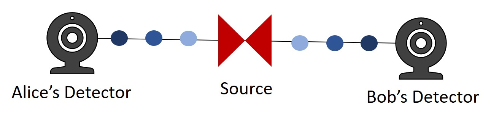
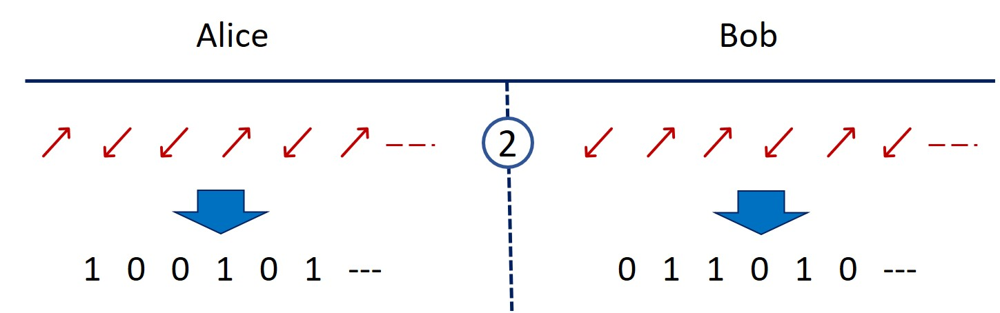

With ongoing deveopments in quantum computing, long-established and currently secure encryption methods may soon become obsolete. New methods immune to such developments must be sought after. Quantum cryptography is a form of encryption that harnesses the fundamental uncertainty of quantum mechanics to provide, in theory, a perfect protection against eveasdropping.
Currently, nearly all communication and data transmission across public channels is encrypted.
Encryption aims to hide information from unwanted eavesdroppers whilst providing full access to the intended recipients.
The most widespread form of encryption is known as RSA encryption. Fundamentally, this works on the principle that it takes far more computing power to calculate the product of two prime numbers than to find the corresponding prime factors of that product. [2]
Say we have two prime numbers, \(13\) and \(17\).
Their product can easily be computed as \(13 \times 17=221\). However, if we were only given the final product, \(221\), it would prove more difficult to factor it into \(13\) and \(17\). Given some trail and error it would certainly be possible to find the factors in this example. Nevertheless, if the size of the product were to increase it would become exponentially more difficult to resolve these prime factors. [2]
In practice the products used are hundreds of digits long and are constantly increases in size to accommodate for new, faster, factoring algorithms.
Fundamentally, classical computers work by creating and manipulating strings of bits. A bit is a binary quantity that can be either a \(1\) or a \(0\) - sort of like an alphabet with only two letters. When strung together, bits can represent information (such as numbers and words).
Quantum computers, on the other hand, work with qubits. [3]
Qubits differ from bits in that they can take one of three possible values: \(1\), \(0\) or a mixture of both \(1\) and \(0\).
This extra state in the computer’s ‘alphabet’ allows it to do certain operations much more efficiently than its classical counterpart.[1,3] One of these operations happens to be the prime factoring of large numbers.
RSA encryption relies on the assumption that the numbers used are far too large to be practicably factored into their primes. With the advent of quantum computing, this assumption may soon collapse.
It is thought that quantum computers can factor numbers exponentially faster than conventional computers, meaning that encryptions currently taking thousands of years to break may soon be breakable in a matter of minutes. [1]
Instead of using mathematical functions to encrypt data, quantum cryptography uses the strange principles of quantum mechanics to create a unique key. Only the intended recipients and the sender access to this key, meaning that it can be used encrypt information transferred between them.
The strange principle of quantum mechanics is known as entanglement.
When two particles are entangled they share a common trait. For example, a pair of particles may be spin-entangled if their combined spin is always a fixed value. Given two spin-entangled particles with a combined spin of \(0\) and individual spins with a magnitude of \(\frac{1}{2}\), if we measure the spin of one to be \(-\frac{1}{2}\), we can know with certainty that the spin of the other must be \(+\frac{1}{2}\) without even measuring it (since \(0=-\frac{1}{2} + (+\frac{1}{2})\)).
Say we have two users, Alice and Bob. They wish to exchange private information without any eavesdroppers in the public seeing it.
In order to do so, they each build a detector that can measure the spin of incoming particles.
A source emits pairs of spin-entangled particles, which travel along quantum channels before reaching Alice and Bob. In the diagram above, entangled pairs are circles coloured with the same shade of blue.
Alice and Bob decide on three settings for their detectors, keeping one common setting but changing the other two. They then use the detectors to measure the spins of the incoming particles, both randomly selecting one of their three settings each time. [1]
They then publicly share the settings used for each of the measurements. Since Alice and Bob now know which settings the other used for each measurement, they can split their measurements into two groups:
- Group 1, where Alice and Bob measured an entangled pair using the different settings.
- Group 2, where Alice and Bob measured an entangled pair using the same setting.
In the diagram above the different arrows represent different settings, with the red arrows being those where Alice and Bob used the same setting to measure an entangled pair.
This is where some interesting quantum mechanics comes into play. By publicly sharing their results in group 1, both users can input all the group 1 results into a formula. The value of this formula will tell them whether any of the particles where interacted with (in an attempt to eavesdrop) by a member of the public while they travelled between them.
If they find that the particles hadn’t been tampered with, Alice and Bob can convert their shared group 2 measurements into a secret key which only they know.
They can then use this key to encrypt the information they wish to transfer between them.
Once transferred, the receiver can use their identical key to decrypt it. [1]
To recap, nearly all data transmission between computers is encrypted. Currently, the most popular mode of encryption is RSA encryption. If developments in quantum computing continue, there may not be much of a future for RSA encryption. Codes could easily be broken by the exponential increase in factoring efficiency brought about by quantum computing.
We must develop new - quantum computer resistant - cryptography methods.
Quantum cryptography is one such development. Fundamentally, it exploits the spin-entanglement of certain quantum particles in order to create a shared, private, key between users. Only those users with the specific key can then encrypt and decrypt transferred information.
[1] A. V. Sergienko, Quantum Communications and Cryptography (Taylor Francis, Boca Raton, Florida, 2006), Vol. II.
[2] RSA Encryption, https://www.comparitech.com/blog/information-security/rsa-encryption/; 2018
[3] What are qubits in quantum computing?, https://medium.com/@jonathan_hui/qc-what-are-qubits-in-quantum-computing-cdb3cb566595; 2018